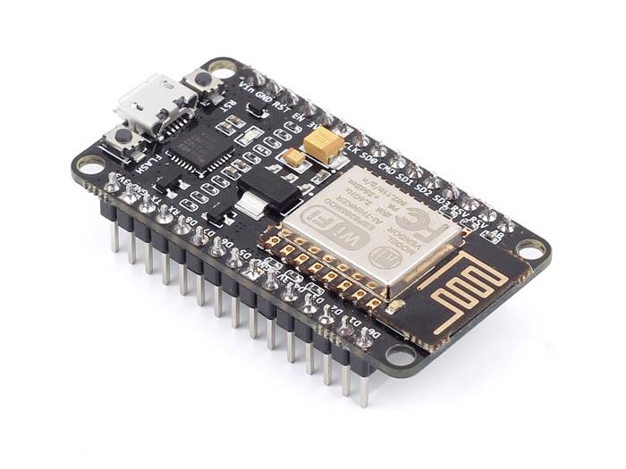
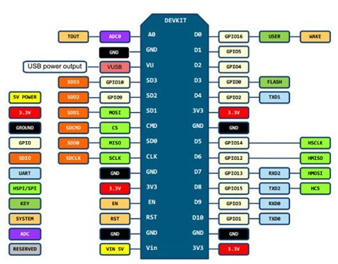
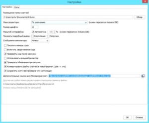
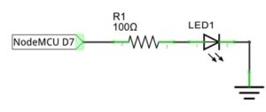
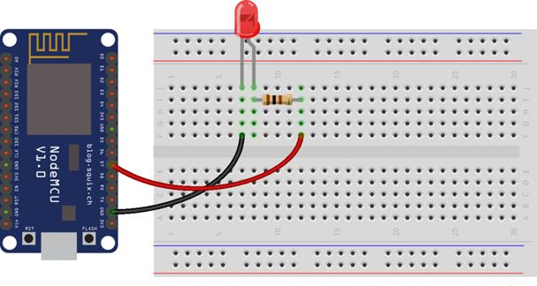
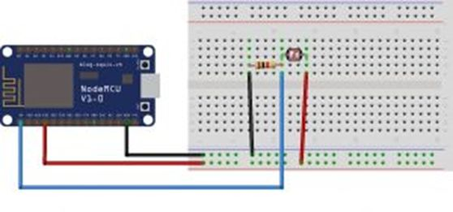
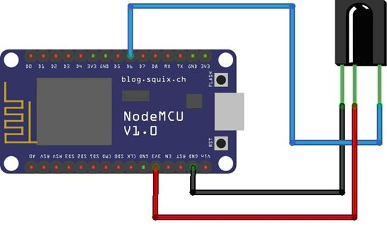
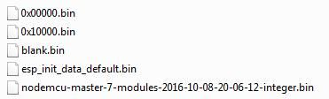
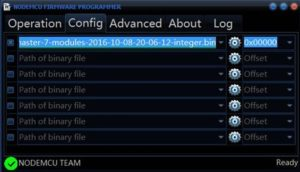
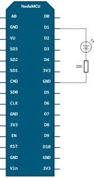

Начало работы с ESP8266 NodeMcu v3 Lua с WiFi
NodeMcu – платформа на основе ESP8266 для создания различных устройств интернета вещей (IoT). Модуль умеет отправлять и получать информацию в локальную сеть либо в интернет при помощи Wi-Fi. Недорогой модуль часто используется для создания систем умного дома или роботов Arduino, управляемых на расстоянии. В этой статье мы рассмотрим описание платы, отличие версий и распиновку последней версии модуля Esp8266 NodeMcu v3. Также мы коротко рассмотрим язык Lua, на котором нужно писать программы для NodeMcu.
Содержание [скрыть]

Технические характеристики модуля:
Существует несколько поколений плат NodeMcu – V1(версия 0.9), V2(версия 1.0) и V3 (версия 1.0). Обозначения V1, V2, V3 используются при продаже в интернет-магазинах. Нередко происходит путаница в платах – например, V3 внешне идентична V2. Также все платы работают по принципу open-source, поэтому их могут производить любые фирмы. Но в настоящее время производством плат NodeMcu занимаются Amica, DOIT и LoLin/Wemos.
Платы поколения V1 и V2 легко отличить – они обладают различным размером. Также второе поколение оснащено улучшенной модификацией чипа ESP-12 и 4 Мб флэш-памяти. Первая версия, устаревшая, выполнена в виде яркой желтой платформы. Использовать ее неудобно, так как она покрывает собой 10 выходов макетной платы. Плата второго поколения сделана с исправлением этого недостатка – она стала более узкой, выходы хорошо подходят к контактам платы. Платы V3 внешне ничем не отличаются от V2, они обладают более надежным USB-выходом. Выпускает плату V3 фирма LoLin, из отличий от предыдущей платы можно отметить то, что один из двух зарезервированных выходов используется для дополнительной земли, а второй – для подачи USB питания. Также плата отличается большим размером, чем предыдущие виды.
Где купить модули NodeMCU и ESP8266
Сегодня на рынке доступно множество достаточно недорогих модификаций плат на базе ESP8266. Мы сделали небольшую подборку наиболее интересных вариантов:
Подавать питание на модуль можно несколькими способами:
Основным недостатком является возможность исполнять только LUA скрипты, расположенные в оперативной памяти. Этого типа памяти мало, объем составляет всего 20 Кбайт, поэтому написание больших скриптов вызывает ряд трудностей. В первую очередь, весь алгоритм придется разделять на линейные блоки. Эти блоки необходимо записать в отдельные файлы системы. Все эти модули исполняются при помощи оператора dofile.
При написании нужно соблюдать правило – при обмене данными между модулями нужно пользоваться глобальными переменными, а при вычислении внутри модулей – локальными. Также важно в конце каждого написанного скрипта вызывать функцию collectgarbage (сборщик мусора).
Модуль V3 имеет 11 контактов ввода-вывода общего назначения. Помимо этого некоторые из выводов обладают дополнительными функциями:

Подключение NodeMCU к компьютеру
Для начала работы с NodeMcu нужно подключить плату к компьютеру. Первым шагом будет установка драйвера CP2102 и открытие Arduino IDE. Затем нужно найти в «Файл» – «Настройки» и в окно «дополнительные ссылки для менеджера плат» вставить ссылку http://arduino.esp8266.com/versions/2.3.0/package_esp8266com_index.json.
id
После этого в меню «документы» – «плата» «менеджер плат» выбрать «esp8266» и установить последнюю версию. После проделанных действий в меню «инструменты» – «плата» нужно найти NodeMCU.
После того, как все необходимые данные будут установлены и скопированы, можно будет начать работать.
Пример подключения светодиода к NodeMCU
Принципиальная схема подключения представлена на рисунке.

Итоговый макет макет выглядит следующим образом:

Сама плата работает от напряжения 3.3 В, поэтому для подключения светодиода нужно использовать резистор. В данном примере для красного светодиода берется резистор номиналом 65 Ом.
Похожим способом к плате подключается и фотодиод:

Плату NodeMCU можно использовать и для управления по ИК каналу. Для управления нужен пульт дистанционного управления с ИК приемником и сама платформа. Инфракрасный приемник подключается по схеме, представленной ниже:

В основу платформы загружена стандартная прошивка Node MCU, в которую встроен интерпретатор языка Lua. При помощи Lua-команд можно выполнять следующие действия:
Для программирования NodeMCU можно использовать Arduino IDE или комплекс средств разработки SDK – ESPlorer. Этот комплекс обладает рядом отличий:
Для обеспечения корректной и стабильной работы нужно обновить прошивку до последней версии. Существует несколько способов обновления – облачный сервис, Docker Image и компилирование в Linux. Каждый из этих способов обладает своими плюсами и минусами. Наиболее простым и понятным является первый способ.
Сбор прошивки в облачном сервисе
Облачный сервис обладает простым и удобным интерфейсом. Работа начинается с ввода email. Далее будет предложено выбрать тип прошивки – стабильная прошивка или тестируемая. Первая используется для обучения и создания большого количества объектов, поэтому рекомендуется выбирать именно ее. Следующим шагом будет подключение нужных модулей. По умолчанию уже записано несколько основных пунктов, остальные нужно включать только по необходимости. Затем выбираются дополнительные опции. Среди них есть поддержка FatFS для чтения sd-карты или включение режима отладки.
После начала сборки придет письмо на почту, сигнализирующее о начале запуска процесса. Через некоторое время придет и второе письмо – будет предложено выбрать версию float (дробные числа) или integer (целые числа).
После перехода по полученной ссылке нужно будет скачать файл bin и поместить его в Resources – Binaries. Там будет расположен файл nodemcu_integer_0.9.5_20150318.bin, который нужно удалить. В итоге содержимое папки будет выглядеть следующим образом.

Для правильной и стабильной работы платы требуется перезаписать esp_init_data_default.bin. Скачать его можно на официальном сайте. Нужный файл нужно поместить снова в систему для прошивки NodeMCU Flasher по пути Resources – Binaries, предварительно удалив из него старый файл.
Затем можно подключать NodeMCU и приступить к обновлению. Для начала нужно поменять настройки – в NodeMCU Flasher во вкладке Config нужно выбрать файл собранной прошивки вместо INTERNAL://NODEMCU.

Остальное оставить без изменений, перейти на Operations и нажать Flash. Как только окончится прошивка, нужно снова перейти на Config и в первой строке указать путь esp_init_data_default.bin. Также дополнительно указывается адрес, куда нужно переместить этот файл. Для модуля NodeMCU следует выбрать адрес 0x3FC000. После этого нужно снова вернуться на Operations и нажать Flash.
После этого нужно переформатировать всю файловую систему млаты. Для этого нужно запустить ESPlorer, обязательно поставить скорость обмена 115200 и перезагрузить NodeMCU. После всех вышеописанных действий будет новая версия прошивки. Отладочная плата полностью перепрошита и готова к работе.
Язык Lua обладает простым синтаксисом и мощными конструкциями описания данных, которые основаны на массивах и расширяемой семантике. Этот мощный язык программирования используется для создания программного обеспечения, расширения различных игр. В отличие от остальных языков Lua обладает более гибкими и более мощными конструкциями.
Можно рассмотреть простейшую схему – мигание светодиодом. Этот пример поможет изучить работы с контактами GPIO. Светодиод нужно подключить как показано на схеме.

Затем нужно записать следующий скетч в левое окно ESPlorer:
pin_number = 1
gpio.mode (pin_number, gpio.OUTPUT) // установка рабочего режима на выход
gpio.write (pin_number, gpio.HIGH)// установка высокого уровня
gpio.write (pin_number, gpio.LOW)// установка низкого уровня
gpio.serout (1, gpio.HIGH, {+990000,990000}, 10, 1) // установка мигания светодиодом 10 раз
После нужно сохранить скрипт с названием init.lua. Сразу после этого начнется автоматическая загрузка написанного кода в отладочную плату и его выполнение. Если операция выполнена успешно, отладочная плата начнет мигать светодиодом.
Важно отметить, что плата самостоятельно выполняет скрипт, подключение к компьютеру нужно только для подачи питания.